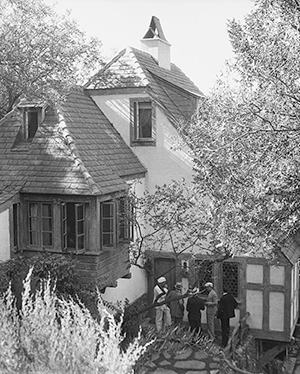

Los Angeles is one of the best destinations for haunted-house hunting, and this Bavarian-style home in Beverly Hills has a particularly gruesome history. In 1932, it was home to the iconic actress Jean Harlow and her abusive husband, Paul Bern, who shot himself in the head while standing in front of the mirror. Their butler discovered him and called MGM instead of the police, so there were tons of rumors that it wasn't actually suicide. Many suspected Bern's ex-girlfriend, a suspicion exacerbated by her jumping off a boat to her death a couple of days later. Jean moved out after his death but died only a few years later at the age of 26.

But wait—it gets creepier. In 1963, celebrity hairstylist Jay Sebring bought the home and lived there with his girlfriend, Sharon Tate, until she left him for Roman Polanski. They were still friends and remained so until both of them were murdered by the Charles Manson cult. Tate was the same age as Harlow when she passed.
But back to when the couple lived in the Harlow House. Tate told several friends of creepy occurrences in the home and even mentioned it in interviews. For example, once, when she was sleeping in the master bedroom alone, she saw a "creepy little man." Her friends say she believed it to be Paul Bern's ghost. She was so freaked out when she saw the alleged ghost that she ran out of the room and then saw a hanging shadowy corpse with its throat slit in the hallway. There are also stories about two other people dying in the swimming pool over the years.